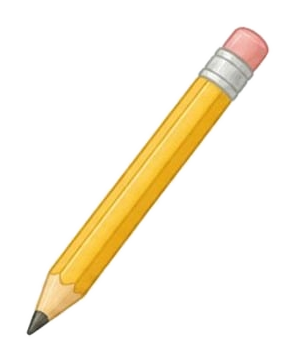

🔐 1번 방 · 2차시 미션 4
물건
탄생 비밀
카드
요원 번호 :
요원 이름 :
1
힌트를 쓰고, 정답 칸에 물건을 그려요.
🔍 나는 누구일까요?
힌트 ①
나는
글씨를 쓰고 그림을 그릴
할 때 써요.
힌트 ②
내가 없으면
지우개를 자꾸 찾아야 해서
불편해요.
힌트 ③
나의 생김새는
머리에 분홍 모자를 썼어요.
🖍️ 정답 물건 그림

이름 :
지우개 달린 연필
2
이 물건의 탄생 이야기를 3컷으로 그려요.
😣 불편했어요
(지우개를 찾느라
두리번거리는 모습)
“지우개 어디 갔지?”
➜
💡 생각했어요
(연필 끝에 지우개를
붙여 보는 모습)
“지우개를 붙이자!”
➜
🎁 내가 태어났어요!
“바로 지울 수 있어!”
3
물건이 되어 한 문장으로 말해요.
나는
지우개를 찾느라 시간이 걸리는
불편함을 해결하려고 태어났어요.
✂️ 문 만드는 법
① 오른쪽 문을 점선을 따라 오려요.
② 문의 ‘풀칠’ 부분에만 풀을 발라요.
③ 정답 칸 위 ‘풀칠’ 자리에 붙이면 열리는 카드 완성!
물건이 태어난 이유를 추리했어요.
☆☆☆
3컷 이야기를 순서대로 그렸어요.
☆☆☆
친구와 퀴즈를 내고 맞혔어요.
☆☆☆
풀칠 (여기만 붙여요)
✦
★
★
?
열어 봐!
물건 교과서 · 물건의 비밀 발견하기
🗝️ 열쇠 조각
 🔐 1번 방 · 2차시 미션 4
🔐 1번 방 · 2차시 미션 4